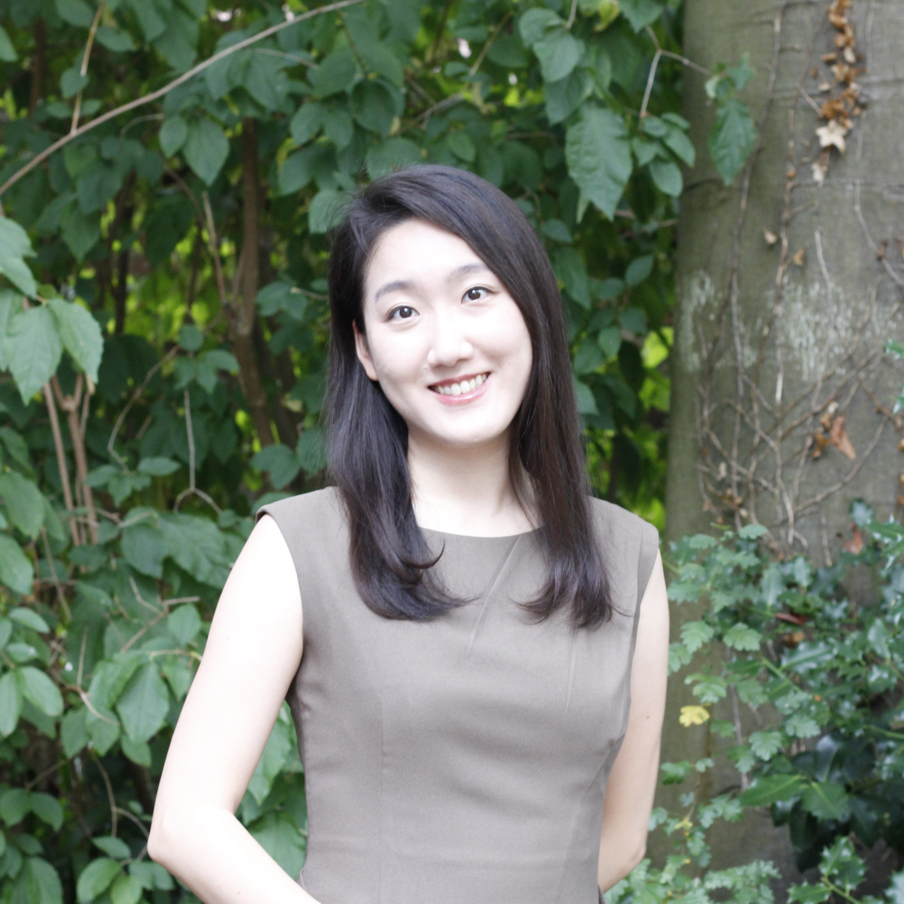

I am a PhD candidate in Sociology at the University of Wisconsin-Madison. My research examines why workplace policies often fail to deliver what they promise, focusing on the gap between formal rules and everyday practice. One ongoing project investigates how workers read colleagues' behavior to judge whether family leave is safe to use, showing through a preregistered experiment that visible behavior, not leadership endorsement, is what moves workplace culture. Another analyzes two decades of family-leave litigation to examine how employers account for adverse actions against workers who use leave. A third project, with Eunsil Oh, audits when AI resume screening produces discriminatory outcomes and how deployment context shapes the risk. As such, my work traces how policies succeed or fail at the point of interpretation, across workplaces, legal disputes, and algorithmic systems.
Here is my CV.